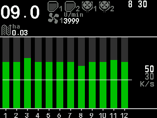

Kurzanleitung — vor und während der ersten Fahrt
Was Sie prüfen, bevor Sie mit dem Hectare Mini aufs Feld fahren, wie das Panel von selbst zu überwachen beginnt und worauf Sie während der ersten Fahrt achten.
Das setzt voraus, dass das System in Betrieb genommen wurde — siehe Inbetriebnahme. Vor der Saison muss der Geschwindigkeitssensor kalibriert worden sein, und die Dosierer ebenso, wenn ihre Wellendrehzahl oder die Saatgutmasse überwacht werden soll (Geschwindigkeitssensor, Sensoreinstellungen).
Vor dem Feld
Schalten Sie das Panel ein und warten Sie auf den Startbildschirm.
Drücken Sie zweimal „HOME“, um den Bildschirm Statistik zu öffnen. Prüfen Sie, dass das richtige aktive Feld gewählt ist; wählen Sie für ein neues Feld ein leeres oder löschen Sie es — Neues Feld beginnen.
Stellen Sie auf dem Startbildschirm mit „PLUS“ / „MINUS“ die Alarmschwelle des Saatdiagramms ein — oder in den Modi „Hybrid“ und „Einzelkorn“ die Sollmenge. „DOWN“ wechselt zum Düngerdiagramm. Siehe Sollmenge ändern.

Das Saatdiagramm mit der Alarmschwelle in K/s und seiner Überwachungslinie. Werden Produkte nach Masse ausgebracht, stellen Sie ihre Mengen in kg/ha auf dieselbe Weise ein.
Prüfen Sie die Einstellungen, die sich mit der Arbeit ändern — im Sensoreinstellmodus (Sensor in die Überwachung nehmen oder aus ihr nehmen), jeden Sensor einzeln: „Periode,s“ jedes Dosierwellensensors; „Minimum, U/min“ und „Maximum, U/min“ jedes Gebläses; „Minimum,Pa“ und „Maximum,Pa“ jedes Drucksensors; „Fraktion“ und „Korrektur“ der Kornsensoren und der Düngersensoren. Alle Kornsensoren teilen sich einen Satz Einstellungen, alle Düngersensoren einen anderen; jeder andere Sensor hat seinen eigenen.
Stellen Sie sicher, dass die Zugriffsstufe „Fahrer“ ist. Auf einer höheren Stufe werden keine Alarmfenster angezeigt, und das Panel warnt Sie mit einem Alarm, wenn Sie mit der Aussaat beginnen. Aus- und Einschalten führt zurück zur Stufe „Fahrer“.
Aussaat
Fahren Sie einfach los. Es gibt nichts einzuschalten: Das Panel beginnt von selbst mit einem kurzen Piepton mit der Alarmüberwachung, sobald diese Bedingungen während der „Alarmverzögerung“ (standardmäßig 3 s) erfüllt waren:
- die Ausbringung ist nicht von Hand gesperrt (Ausbringung von Hand sperren);
- bei einem überwachten Gerätestellungssensor: die Drillmaschine ist in Arbeitsstellung;
- bei Dosiermotoren oder einer Flüssigkeitspumpe: die Drillmaschine fährt, und der Geschwindigkeitssensor ist überwacht und zeigt eine Geschwindigkeit;
- sonst: mindestens „Anteil säend,%“ (standardmäßig 20 %) der überwachten Reihen säen — und, wenn am Geschwindigkeitssensor „Aussaatkriterium“ eingestellt ist, fährt die Drillmaschine.
Fällt eine Bedingung weg, endet die Überwachung sofort mit drei kurzen Pieptönen. Einen eigenen Alarm für eine Drillmaschine, die fährt, während kein Saatgut ankommt, gibt es nicht: Dann beginnt die Überwachung nicht, und der Piepton bleibt aus.

Bei der ersten Fahrt prüfen
- die Geschwindigkeit gegen den Tacho des Traktors oder ein GPS-Navigationsgerät;
- die Gebläsedrehzahl und den Druck — innerhalb ihrer Grenzen, nicht rot;
- die Saatsäulen über ihrer Linie und die Aussaatmenge gegen die Sollmenge in den Modi „Hybrid“ und „Einzelkorn“;
- die Düngersäulen über ihrer Linie;
- die Produktmenge in kg/ha gegen den Sollwert;
- kein Rot auf einer anderen Anzeige — Anzeigen.
Fällt der Geschwindigkeitssensor aus, lässt sich die Geschwindigkeit in seinen Einstellungen simulieren, bis er repariert ist (Geschwindigkeitssensor). Erscheint ein Alarm, halten Sie an und beheben Sie die Störung — So arbeiten die Alarme. Die Qualität des letzten Stücks steht in der Aussaattabelle; das Ergebnis für das ganze Feld auf dem Bildschirm Statistik.
Ihre Maschine tut etwas, das diese Seite nicht beantwortet? Schreiben Sie an support@agriwelt.com — es antwortet ein Ingenieur.